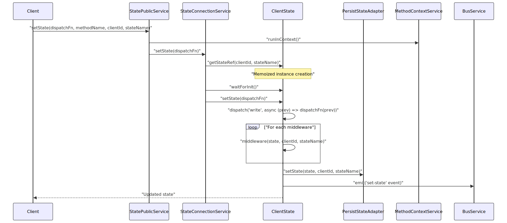

This document covers patterns and best practices for managing persistent storage and application state within the agent swarm system. It focuses on the ClientStorage and ClientState implementations, their associated services, and embedding-based retrieval patterns.
For information about session lifecycle management, see Session and Chat Management. For details about the persistence infrastructure and history management, see Persistence and History.
The state management system provides client-scoped and shared state with dispatch-based updates, middleware support, and optional persistence.


The storage system provides embedding-based similarity search, CRUD operations, and client-scoped or shared storage with event-driven updates.


State persistence is controlled by the persist flag in state schemas and uses either PersistStateAdapter or custom functions:
| Pattern | Configuration | Implementation |
|---|---|---|
| Auto Persistence | persist: true |
Uses PersistStateAdapter.getState and PersistStateAdapter.setState |
| Custom Persistence | Custom getState/setState |
User-defined functions for state retrieval and storage |
| Memory Only | persist: false |
Uses GLOBAL_CONFIG.CC_DEFAULT_STATE_GET and CC_DEFAULT_STATE_SET |
| Shared State | shared: true |
Single instance across all clients with clientId: "shared" |

The system distinguishes between client-specific and shared resources through configuration and service delegation:

Both state and storage services use memoization for efficient instance reuse:
| Service | Memoization Key | Lifecycle Management |
|---|---|---|
StateConnectionService |
"${clientId}-${stateName}" |
Tracked in SessionValidationService, cleared on dispose |
StorageConnectionService |
"${clientId}-${storageName}" |
Tracked in SessionValidationService, cleared on dispose |
SharedStateConnectionService |
"${stateName}" |
No disposal - managed globally |
SharedStorageConnectionService |
"${storageName}" |
No disposal - managed globally |
ClientState emits events for all state operations through BusService:
set-state: Emitted after successful state updatesclear-state: Emitted after state reset operationsget-state: Emitted after state retrieval operationsClientStorage emits events for all storage operations:
upsert: Emitted after item insertion/updatesremove: Emitted after item deletionclear: Emitted after storage resettake: Emitted after similarity search operationsget: Emitted after item retrievallist: Emitted after listing operations with filtersUse Dispatch Functions: Always update state through dispatch functions for consistency:
await setState(async (prevState) => ({ ...prevState, newField: value }))
Leverage Middlewares: Apply cross-cutting concerns through state middlewares for validation, logging, or transformations.
Shared vs Client-Specific: Use shared: true for application-wide state, client-specific for user sessions.
Optimize Embeddings: Cache embeddings using writeEmbeddingCache and readEmbeddingCache to avoid redundant computations.
Batch Operations: Use execpool configuration via GLOBAL_CONFIG.CC_STORAGE_SEARCH_POOL to control concurrent embedding operations.
Score Thresholds: Set appropriate similarity scores in take() operations to filter relevant results.
Use the fork() function for isolated state and storage operations in background contexts:
const result = await fork(async (clientId, agentName) => {
// Isolated storage/state operations
return await processData(clientId);
}, { clientId: randomString(), swarmName: "ProcessingSwarm" });